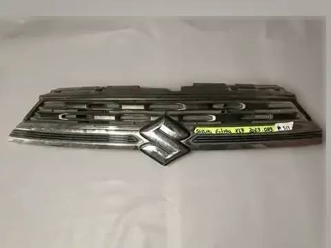

Piezas de carrocería para Suzuki Ertiga
16 piezas disponibles hoy para Suzuki Ertiga, cada una con su foto y su código: lámparas traseras (4), parrillas (4), retrovisores (2), guardafangos (2). Dinos el año de tu carro y te confirmamos si le sirve.
- Garantía de 3 días
- Foto real de cada pieza
- Efectivo, Yappy o ACH
- Lunes a sábado, 8:00 a. m. a 5:00 p. m.
Lámparas traseras para Suzuki Ertiga 4
 318Ertiga2019 · lado izquierdo · original
318Ertiga2019 · lado izquierdo · original 321Ertiga2019-23 · lado izquierdo · original nuevo
321Ertiga2019-23 · lado izquierdo · original nuevo 326Ertiga2019-23 · lado izquierdo · original
326Ertiga2019-23 · lado izquierdo · original 329Ertiga2019-26 · lado izquierdo · original
329Ertiga2019-26 · lado izquierdo · originalParrillas para Suzuki Ertiga 4

513Ertiga XL72023 · original 514Ertiga2015-18 · original nuevo
514Ertiga2015-18 · original nuevo 515Ertiga2017 · original nuevo
515Ertiga2017 · original nuevo 650Ertiga XL72021-24 · original
650Ertiga XL72021-24 · original RV002Ertiga
RV002Ertiga RV019Ertiga / Swift
RV019Ertiga / Swift GF079Ertiga
GF079Ertiga GF082Ertiga
GF082Ertiga VR012Baleno / Ertiga / XL7 / Fronx / Dzire
VR012Baleno / Ertiga / XL7 / Fronx / Dzire